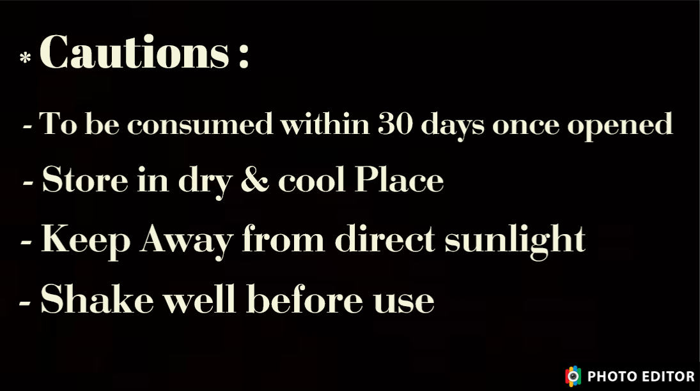

- To be consumed within 30 days once opened
- Store in dry & cool Place
- Keep Away from direct sunlight
- Shake well before use
- Ayurvedic formation tend to change colour over time
DIRECTION OF USE:
10ml Liquid to be taken two times a day
Our one of the product of Dr. Smita Patil’s Ayurveda Health care clinic is "Diabom" which is the Medicine of Diabetes
.........................................................................................................


 .........................................................................................................
.........................................................................................................